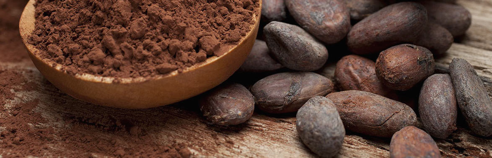
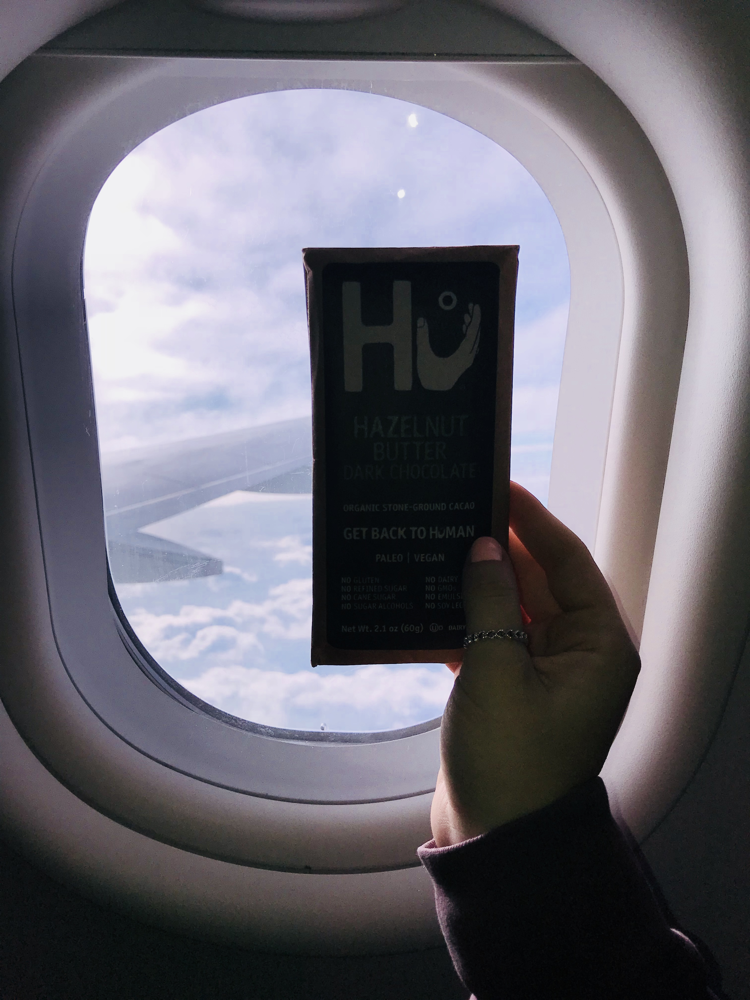

The Cocoa Bean

I am a chocolate fanatic. I love trying chocolate from
my small businesses. I prefer my reviews just like the way I prefer
my chocolate… raw and organic. All of my reviews are uncut and are written
in the spur moment. Chocolate is more than just satisfying a craving for sugar-
it’s an experience, one that I want to share with you in every one of my reviews.
Human-ing to Florida: Hazelnut Butter Dark Chocolate by Hu
12/29/17 | 3:04pm | JFK Airport
Today I was in the airport at 11am. At such an hour I craved the usual… coffee. With the bittersweet taste still fresh, I was reminded of my love for bittersweet dark chocolate! Conveniently enough while I was at one of the shops buying a snack for my sister, a wholesomely wrapped chocolate bar captured my attention. Realizing that I might regret not buying it, 5 minutes before boarding I rushed to get the Hazelnut Butter Dark Chocolate by the Human Company. It came out to a whopping $8. 15, the expected price for organic, fair trade dark chocolate.
With my boarding pass in one hand and Hu bar in the other I was examining the package. The moment I layed eyes on it I saw the title dark chocolate, but I was curious where I could find the percentage of cacao. Nowhere to be found, I disregarded it. “Hu (as in Human)” has a simply beautiful list of four ingredients, all of which I was able to pronounce, and boasted a lengthy list of no’s: No gluten, No refined sugar, No cane sugar, No sugar alcohols, No dairy, No GMOs, No emulsifiers, and No soy lecithin.
All this reading has made me reach my peak of excitement. Its finally time. As I open the bar I am delighted to find the story of the sibling co-founders, Jordan Brown and Jessica Karp, who, also, have Paleo-inspired restaurants among their Paleo Chocolate Bars.
With my first bite I break into a wonderful creamy, mousse-like filling: it’s the hazelnut butter. The hazelnut butter is definitely less on the milky side and is more on the nutty side. Surrounding the pocket of hazel butter is the light dark chocolate with a slight hint of bitterness to level out the soft filling.
Overall the bar is delicately crafted and very smooth. I would imagine the smoothness is because of the bar being uniquely stone-ground. Its safe to say that I have found the perfect bar for any dark and milk chocolate lover since it finds that lovely balance in between.
Only after eating it, I discovered the small font on the back reading that its 70% fair trade cacao. And even more so, the bar is vegan. I have never seen so many admirable traits in a single bar.
What a great way to start my trip to Florida than with this splendidly (unique) experience! I can’t wait to get back to (being) Hu(man) sometime soon!
Try it for yourself: Hu Chocolates!
Human-ing to Florida: Hazelnut Butter Dark Chocolate by Hu
12/29/17 | 3:04pm | JFK Airport
Today I was in the airport at 11am. At such an hour I craved the usual… coffee. With the bittersweet taste still fresh, I was reminded of my love for bittersweet dark chocolate! Conveniently enough while I was at one of the shops buying a snack for my sister, a wholesomely wrapped chocolate bar captured my attention. Realizing that I might regret not buying it, 5 minutes before boarding I rushed to get the Hazelnut Butter Dark Chocolate by the Human Company. It came out to a whopping $8. 15, the expected price for organic, fair trade dark chocolate.
With my boarding pass in one hand and Hu bar in the other I was examining the package. The moment I layed eyes on it I saw the title dark chocolate, but I was curious where I could find the percentage of cacao. Nowhere to be found, I disregarded it. “Hu (as in Human)” has a simply beautiful list of four ingredients, all of which I was able to pronounce, and boasted a lengthy list of no’s: No gluten, No refined sugar, No cane sugar, No sugar alcohols, No dairy, No GMOs, No emulsifiers, and No soy lecithin.
All this reading has made me reach my peak of excitement. Its finally time. As I open the bar I am delighted to find the story of the sibling co-founders, Jordan Brown and Jessica Karp, who, also, have Paleo-inspired restaurants among their Paleo Chocolate Bars.
With my first bite I break into a wonderful creamy, mousse-like filling: it’s the hazelnut butter. The hazelnut butter is definitely less on the milky side and is more on the nutty side. Surrounding the pocket of hazel butter is the light dark chocolate with a slight hint of bitterness to level out the soft filling.
Overall the bar is delicately crafted and very smooth. I would imagine the smoothness is because of the bar being uniquely stone-ground. Its safe to say that I have found the perfect bar for any dark and milk chocolate lover since it finds that lovely balance in between.
Only after eating it, I discovered the small font on the back reading that its 70% fair trade cacao. And even more so, the bar is vegan. I have never seen so many admirable traits in a single bar.
What a great way to start my trip to Florida than with this splendidly (unique) experience! I can’t wait to get back to (being) Hu(man) sometime soon!
Try it for yourself: Hu Chocolates!
The Not so NYC: Dark Chocolate by TCHO
12/31/17 | 6:45pm | Walmart
Having a new-founded zeal for creating my chocolatey blog, I jumped at the opportunity to go to Walmart. I was hoping to get another wholesome chocolate bar. Although a Floridian Bar isn’t consistent with the theme of this website, NYC Local, I thought it might be something nice to try.
As I expected aisle number 3, the candy aisle, was filled with big-name chocolate brands (Hershey, milkyway, etc.). Slightly disappointed, but not discouraged, I was meticulously looking for a bar that was at least not a name brand bar (so as to somewhat stay true to the theme of this site). Half way down the aisle I think I found the one, unfortunately it was the only one.
The more I looked at the Dark Chocolate TCHO bar, the less I had that homey feel of NYC bars. TCHO seemed to focus a lot on mimicking the standard for mass-produced bars: a clean-cut look conveying no personal touch. Being slightly disheartened with the packaging I decided to do some research on the fairly new, San Pablo based company.
With some research, I can clearly see that TCHO is trying to present itself as more than just an everyday chocolate company, but one that provides luxury chocolates and baking chocolate. Seeing the “Aged Earl Grey Chocolate Bar” I almost fell into a cocoa induced coma.
Back to the Dark Chocolate bar, I am most excited for the “chocolatey notes” in the 70% Ghanaian cacao. Time to try!
Opening the bar I am pleased to see that the design of the package is also engraved into the bar. Seeing that each flavor (on their website) has a corresponding design I appreciate the care and detail of coming up with a design and engraving it for each flavor. Inspecting the bar from every edge it is a well-designed and structured bar showing off varying angled surfaces.
The instant I bit into a piece a slightly liquored bittersweet taste filled every millimeter of my mouth. Letting the bar melt away, the dark chocolate tasted much sweeter then 70% cacao. Like no other this bar had a very strangely delightful earthy after-taste. Almost indescribable, the taste is a very particular one that must be tried to fully appreciate.
All in all, I commend TCHO for turning everyday chocolate into an art filled experience, and for bringing a new flavor to dark chocolate.
Seeing how amazing their basic Dark Chocolate bar was I am that much more excited for the Aged Earl Grey. You’re next ;)
Try it for yourself: TCHO Chocolates!